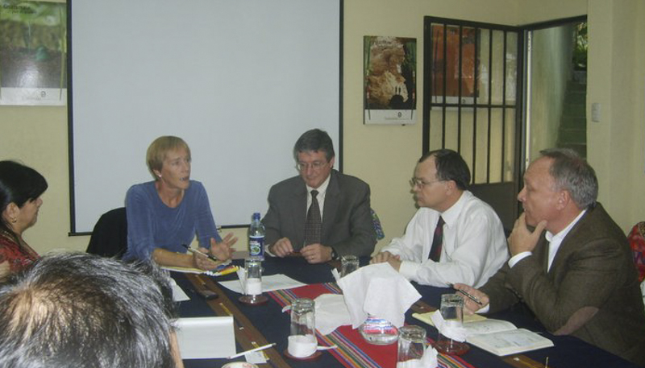

Evaluation

Paquita, It has been a pleasure working with you on the Independent Evaluation of the Consolidation of the Mexican National Protected Areas System Project. Your vast experience, rapid learning, pertinent questions, friendly engagement and careful analysis allowed for essential insights that allow us now to reflect, enrich and enjoy this project that is so close to our hearts. Thank you for the intellectual feast and for providing our protected areas with the great insights of a first class world consultant.
Renée Montagut González, Fondo Mexicano para la Conservación de la Naturaleza (FMCN)
Aligning Visions provides independent program assessment services for foundations, governmental agencies, and global and national nonprofits committed to ecosystem conservation and sustainable livelihood projects. I structure assessments to address questions that are relevant to the local stakeholders’ future decisions and actions. Participatory assessments, wherein stakeholders have a real say in designing the key questions and reflecting on project outcomes and impacts, are my preferred approach. Once the key questions are identified with clients, I will gather data through interviews, field visits, surveys, workshops, and careful document reviews using different techniques from “appreciative inquiry” to group reviews of results chains. Objective evaluations are critical to all of us, as conservationists and humanitarians, to ensure that our strategies and efforts have as great a conservation impact as possible, particularly given the severity of the threats affecting natural systems and the local communities that depend upon them.
Some independent program assessments led by Aligning Visions include:
- Final evaluation of the Tropical Forest Conservation Act Program in Paraguay.
- A review of the Forever Costa Rica Trust after its first three years of operation to inform donors about the accomplishments to date, to review the financial and investment policies in place, and provide recommendations for next steps.
- Final evaluation of the Global Climate Change Resiliency Programme on the Mesoamerican Reef with the World Wildlife Fund (WWF);
- Evaluation of Phase 1 of the Amazon Protected Area Program, Brazil for the Global Environment Facility (GEF) and FUNBIO.
- Internal evaluation of freshwater climate change adaptation programs of WWF-US in four global river basins;
- Mid-term evaluation of the Tropical Forest Conservation Program in Guatemala for USAID;
- Final evaluation of Phase 2 of the Consolidation of the Mexican Natural Protected Area System for the Global Environment Facility (GEF) and the Mexican Fund for the Conservation of Nature (FMCN);
Paquita, you did an excellent job leading the assessment of the WWF Mesoamerican Reef Climate Change Adaptation program. You are a gifted analytical and strategic thinker who has truly helped us increase our understanding of the program's impact and best strategic options for moving forward.
Nadia Bood, Scientist and Climate Change Adaptation Advisor, WWF-Mesoamerican Reef
When we planned to contract a consultant for an independent evaluation of the Amazon Protected Areas Program (ARPA), we were concerned that we wouldn’t find anyone capable of understanding the complexity of the program in a short-time frame. In less than 2 months, Paquita developed an enormous understanding for the nuances of this program - the largest conservation program of tropical forests in the world. Her efforts resulted in a document with incredibly useful information on our execution and results, supported by comments and perspectives from all the implementing partners. As we begin planning for Phase 2, Paquita’s report and her constructive recommendations will be a critical input into the decisions and adjustments we make to be even more successful with ARPA in the coming years.
Daniela Leite, Program Director ARPA, Fundo Brasileiro para a Biodiversidade (FUNBIO)
I just read through your evaluation on our freshwater climate change adaptation work. It’s fantastic! The way you frame the issues, discuss the finding, and link them logically to the lessons learned and recommendations is extremely clear and engaging. Your report touches on so many of the issues the adaptation community within the WWF Network have been discussing for the past two years (or more!). This report has real potential to help us shape future programs.
Eliot Levine, Senior Program Officer, Adaptation Program, WWF-US

Scroll to Top